マフラーできりりっ☆ [梅吉]
最近100均に行くと必ずクリスマスグッズ売り場をチェックします。
もちろん梅吉に使えるものはないかと物色するのですが・・・
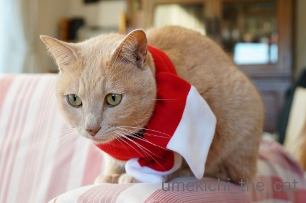
マフラーを見つけましたよ！
こてつくんのマフラーみたいに可愛い飾りは付いてなかったです。残念。
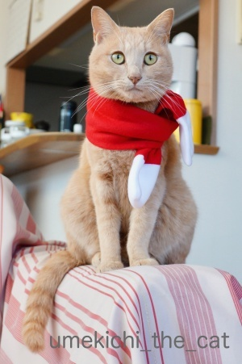
子供用って書いてありましたが梅吉でこんな感じ。
子供と言っても赤ちゃん用かな？
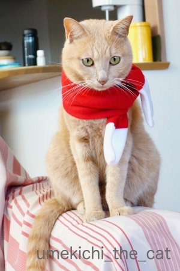
頭にはいろいろ載せてきましたが（ケープはあるけど）巻き物は初めてです。
このお顔はちょっと戸惑っているようにも見えますね。
初めてできた彼女からもらった手編みのマフラーが派手な赤で戸惑う男子中学生
って感じでしょうか(*>艸<)
ちなみに私は中学生の時、黄色いマフラー編んでプレゼントしたことがあります。
何で黄色にしたんだろう・・・
若かったんですねーwww
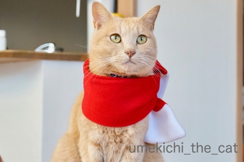
初めての巻き物にも動ずることなくきりりとしたお顔を決めてくれました！
〜梅吉当て字〜
kikiさんのブログ記事で国芳の猫文字を見ていたら梅吉でも出来そうな気がして・・・
出来たのがこれ！
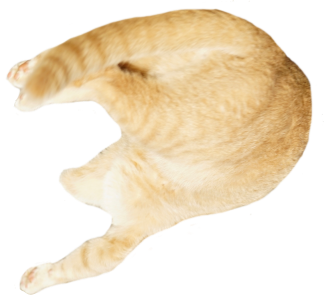
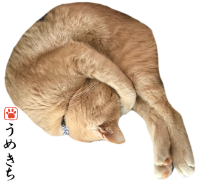
・・・・・「つの」(〃▽〃)
もっといろんな字が見つけられるかなと思ったのですが意外に無いものなんですねー。
「の」と「つ」（「し」）みたいのは沢山。偏りすぎですw
使った写真はこれ。
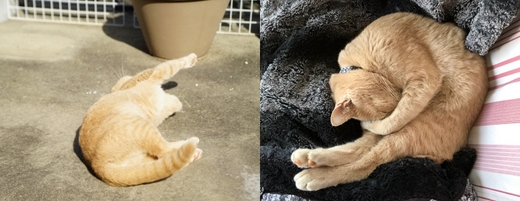
 ↑ガブッと一押し↑
↑ガブッと一押し↑
もちろん梅吉に使えるものはないかと物色するのですが・・・
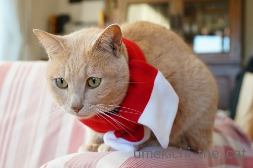
マフラーを見つけましたよ！
こてつくんのマフラーみたいに可愛い飾りは付いてなかったです。残念。
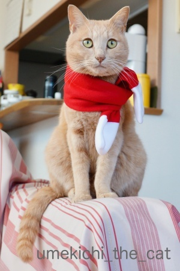
子供用って書いてありましたが梅吉でこんな感じ。
子供と言っても赤ちゃん用かな？
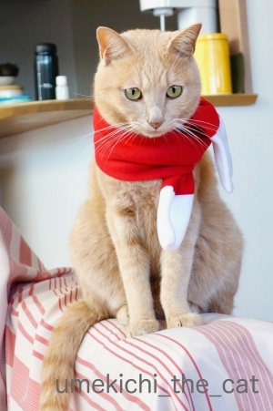
頭にはいろいろ載せてきましたが（ケープはあるけど）巻き物は初めてです。
このお顔はちょっと戸惑っているようにも見えますね。
初めてできた彼女からもらった手編みのマフラーが派手な赤で戸惑う男子中学生
って感じでしょうか(*>艸<)
ちなみに私は中学生の時、黄色いマフラー編んでプレゼントしたことがあります。
何で黄色にしたんだろう・・・
若かったんですねーwww
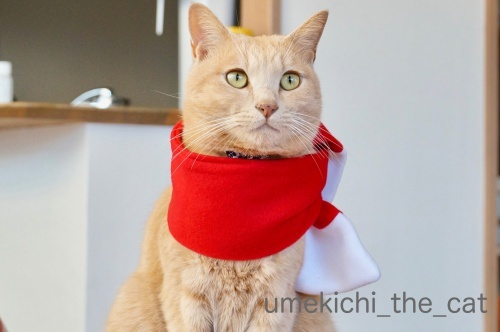
初めての巻き物にも動ずることなくきりりとしたお顔を決めてくれました！
〜梅吉当て字〜
kikiさんのブログ記事で国芳の猫文字を見ていたら梅吉でも出来そうな気がして・・・
出来たのがこれ！
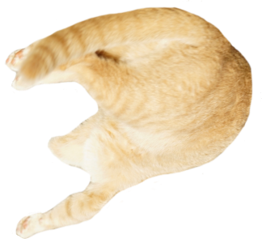
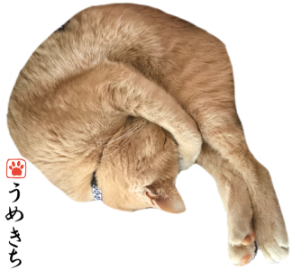
・・・・・「つの」(〃▽〃)
もっといろんな字が見つけられるかなと思ったのですが意外に無いものなんですねー。
「の」と「つ」（「し」）みたいのは沢山。偏りすぎですw
使った写真はこれ。
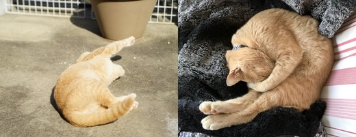

カフェオレ色の梅吉

梅吉 2023年8月10日 永眠


梅吉と出会った譲渡会

犬猫の理由なき殺処分ゼロ
妄想広告
UMEKICHI 光

爆発的に早い！
時々攻撃的！
Thanks to Mr.Boss365
爆発的に早い！
時々攻撃的！
Thanks to Mr.Boss365

この時期は100鈞ではクリスマスのものが増えますね！
梅吉さんのの字は頭を抱えていますね、何てことだってLINEのスタンプに使えそうですね(^^)
by ma2ma2 (2018-12-13 00:14)
梅吉さんサンタさんカラーのマフラーお似合いです。巻物も平気なんですね。
梅吉さん猫文字は手ぬぐいにして売って欲しいです。「つくし」とか「のし」とか色々作れそうです。
by zombiekong (2018-12-13 00:36)
梅吉さん、キリッとして、一段と男前やわ〜（笑）
わし、似合うやろ〜って、ポーズとってますやん（笑）関西弁ど〜や？（笑）
赤いマフラーがよく似合ってます。
梅吉さんの当て字を早く観たくて（笑）
一人当て字『つの』良いですね。
梅吉さんの妄想彼女の名前が『しの』だったら奇跡ですね（笑）
zombiekongさんの『つくし』や『のし』いけてます（笑）
国芳だって、1字にいろんな格好のニャンさんが登場ですから、
梅吉さんに、
何度も頑張って頂くと『うめ』とか『きち』とか出来そうですね〜（笑）
by kiki (2018-12-13 01:10)
幸せの黄色いハンカチ → 幸せ＝黄色
ですかね？
それから金運がアップしたとかは？＾＾；
by ぽちの輔 (2018-12-13 06:49)
梅吉さん、首冷やさないためにも良いですね。
お似合いですよ^^梅文字ｶﾜ(・∀・)ｲｲ!!
by ニコニコファイト (2018-12-13 06:52)
梅吉さん、真っ赤なマフラーがお似合いですねぇ( ^ω^ )
キリッとしたイケメン顔で完璧モデルさん*\(^o^)/*
さすが芸達者な梅吉さんは猫文字もお出来になるんですね=(^.^)=
うちの無芸大食な某猫とは違うなぁw
by ニッキー (2018-12-13 08:06)
私も毎回１００均チェックします（笑
赤いマフラーお似合いですよぉ～(#^.^#)
猫文字！！まさかの『つの』！！
面白すぎます♪
by きぃ (2018-12-13 08:21)
おおお！
「つの」でしたか^^
写真を選ぶのも大変そうだ～。うみだと、ヘソ天で「一」しか書けないよ(笑)
梅吉君、赤色がとっても似合ってるよ。
自分でも分かってるからキリリとした顔になったのかな？^^
ちぃさんの学生時代の恋バナ、聞いてみたいですわｗ
手作りのものプレゼントしたこと無いわ(笑) わっはっはｗｗ
by リュカ (2018-12-13 10:49)
100均、私も週に一度はチェックしてます(^▽^;)
赤が梅吉さんにとってもよくお似合い♪ ほんといいモデルさんですね！
手編み・・・セーター失敗してマフラーになったことあります(#^^#)
梅吉さんの「の」は高飛び込みの選手みたい！
ウチのは勾玉みたいに少し曲がって寝そべってることが多いから「つ」は出来るかも？！
by ゆきち (2018-12-13 12:54)
マフラー可愛いです～(*^-^*)
きりりとした梅吉くんは憧れの先輩風ですよ。
ちぃさんも黄色いマフラーを？キュンとしちゃうエピソードだわ。
私も今から、うちの子たちに編もうかしら♪
猫文字も楽しい！！
タラだったら「へ」とかいいかも！
ぴーーんと一直線になってることも多いの～ｗ
by emi (2018-12-13 15:55)
今日、百均へ買い物に行ったらいろんな猫グッズが置いてありました。
見ているだけで楽しかったですね～
梅吉さん、本当にお似合いですよ(^^)
by kou (2018-12-13 17:10)
先生！
たくさんいじられて嬉しそうですね〜＾＾
by KENT0mg (2018-12-13 18:37)
マフラーお似合いですね！^^)
しかもぜんぜん嫌がってない梅吉さん、尊敬します。
梅吉さんの「つ・の」に、我が家の「句読点」も参加させてくださいっ！^^; ﾅﾝﾁｬｯﾃ
by yes_hama (2018-12-13 20:56)
梅吉さんが少し照れているように見えます。
嬉しいのをじっと我慢している様な。
マフラーをプレゼントしてもらったことはありません。
涙。
by riverwalk (2018-12-13 22:23)
梅吉さん、サンタマフラー似合う～！
ちゃんとポーズ取ってくれてますね、良い子～＾＾
猫文字、なるほど、「つの」ですか。
いろいろ出来そう？＾＾
by sana (2018-12-14 00:12)
サンタ仕様のマフラー似合ってるニャ～
by 英ちゃん (2018-12-14 01:04)
梅さま！お似合いですヨッ！
いい子にはサンタさんからいいものが・・・？？（￣艸￣*
猫文字とは斬新な！
「う」「め」も可能な気がしてきました！
（こういうのは言っちゃったもん勝ちってことで！^^）
by Ja-Kou66 (2018-12-14 01:51)
マロンカラーの毛並みに真っ赤なマフリャ～がすっごくお似合いです。
私も100均を物色してみようかな。
数年前に買ったクリスマス猫コスプレが一式見当たらなくて・・・
引越のどさくさで丸ごと捨てたか？
猫文字・・・梅吉さんのような手足が長い猫さんなら一杯できそう。
うちは太くて短いのとモフモフで文字になりにくそうです(笑
by marimo (2018-12-14 10:21)
黄色いマフラーですかフフフ(*^。^*)黄色いマフラーと言えば私には「エースをねらえ」の藤堂さんしか出てきません(笑)って知らないですよね～(T_T)
by palpal (2018-12-14 16:09)
猫文字最高ー！！(≧∀≦)
これからは寝てるときに無理やり文字の合わせた
変なポーズさせられる可能性大やねー。
by よーちゃん (2018-12-14 19:08)
グッドルッキングガイは何でも似合うね♡
素敵なクリスマスと新年を過ごしてね！
ヽ(〃^・^〃)ﾉ ﾁｭｯ♪
by Ginger (2018-12-15 12:34)
こんにちは。だいぶ出遅れた・・・
梅吉君！！紅白のマフラーが似合ってます。
子供用を探してくるちぃさん！！流石です。
小生もマフラー頂いた事ありますが、手編みマフラー？男の子は嬉しい反面、
戸惑い９０パーセントの感じかな？
黄色は良い色です「あなたに注意？注目してます」のメッセージですね（笑）。
梅吉君の当て字、もし？彼が手編みマフラーをしていなかったら・・・
ちぃさんは「角を出す」のメッセージですね！？(=^･ｪ･^=)
by Boss365 (2018-12-15 13:25)
マフラーしたら梅吉っつぁんは固まっちゃったみたいですね。
猫文字も面白ぴです。
by 旅爺さん (2018-12-15 16:18)
つのでしたか。
なんとなくうめかと思っちゃいました。
by ふにゃいの (2018-12-16 18:06)
ma2ma2さん＞
季節ものは100均で買うに限りますよね＾＾
（特にペットのものは・・・）
実は今LINEスタンプ作ってます！そのアイディア頂きまーす＾＾
zombiekongさん＞
巻き物、全然平気でした＾＾慣れ？って凄いですね♡
梅文字手ぬぐい良いですねー！
とすると、もう少しレパートリーを増やしたいところです。
色々構想はあるのですが手が遅いので
いつ形になるのかは全くもって不明でーす(^_^;)
kikiさん＞
遅い時間のご訪問ありがとうございましたm(_ _)m
マフラーにサンタ帽子も被せたかったのですが
ちょっとハードルが高くて・・・
代わりにペンギンぺんちゃんに頑張ってもらったので
後日集合写真（笑）をアップ予定でーす(≧▽≦)
『しの』さんといえば水戸黄門の「志乃」さんが思い浮かんじゃいます！
梅吉と志乃・・・痛快時代青春物語が出来そうな(*>艸<)
梅文字は色々構想しているのですが・・・
上手くいくのか全く予測できませんwww
ぽちの輔さん＞
おおお！そうですよねー。
あの時代は三角のハンカチのはためく感動映画がありましたよね＾＾
金運アップ？もしもクラス会であったらその辺確かめておきます。
一廉の人になっていたら「あんたの今の成功はうちのおかげやで」（←だれ？w）
と恩を売っとこうかしら(*>艸<)
ニコニコファイトさん＞
そうそうマフラーは空気の乾燥からも守ってくれるんですよね！
朝起きたら梅吉の首に巻くようにしようかしらー＾＾
梅文字、バージョンアップしたのを構想中です（制作中ではありませんw）
ニッキーさん＞
ニッキーさんちのおおきなニャンズさんたちだと
雄大な猫文字ができそうですよ0(≧▽≦)0
細かい？小さい？？文字はノエルさん担当で(^_－)☆
梅吉には「ぬ」とか「る」の丸部分を編み出して欲しいところです！！
きぃさん＞
100均チェック、生き物を飼っているうちでは必須ですね！
ということは？
Leaちゃんのクリスマスコスプレがご披露されるのかしら＾＾
今ある写真であまり手間をかけずに作れる猫文字
『つの』くらいしかありませんでした0(≧▽≦)0
でも、なんだか、アホっぽくて梅吉らしいかなってwww
リュカさん＞
うみちゃんの「一」は手直しいらずで完璧な「一」ですね(*>艸<)
おててが綺麗に伸びているから開運文字でもあります！！
手作りプレゼント、黄色いマフラーとあとはバレンタインの手作りチョコw
チョコはねー、指紋がいっぱいついた出来上がりになって
慌ててココアパウダー買ってきて振りかけてごまかしましたwww
ちなみに中学生時代の話ですよーん。
高校生になってからは「柄にもないことはやめよう」と決めました(｡-_-｡)
ゆきちさん＞
100均通い、お店によって置いているものが違うので
ローテで回ったりしています＾＾
こてつくんも赤がお似合いでしたよね！
やんちゃ系の子には赤が似合うのかしらー0(≧▽≦)0
おお〜！セーターに挑戦されたのですね！！
私は編み方の本を見ただけで諦めましたw
梅吉の「の」の字。私も高飛び込みを思いました！！
きれいに抱え込んでいるなぁってw
無茶する子だから10回転くらいして水面に叩きつけられそうですけど(*>艸<)
emiさん＞
emiさんはご自分で編めちゃうから羨ましいわ！
私は色々やったのは中学生くらいまでで
向いてないのは十分分かってあまりやらなくなっちゃいました(⌒_⌒;
今はもう鍵編みしか出来ませんw
編み棒の手なんてもう忘れちゃったわー。
タラくんの「へ」とぴーんと一直線、
想像するだけでニヤニヤしちゃいます0(≧▽≦)0
kouさん＞
世の猫ブームのお陰か、最近はねこグッズが充実ですよね＾＾
むかしなんて犬用品しかなかったのに！
赤いマフラー、好評いただいてて嬉しいです！！
KENT0mgさん＞
そうそう！
梅吉はかまってもらえると嬉しい子なのです＾＾
飼い主の思い込みじゃないですよーwww
yes_hamaさん＞
そうなんです＾＾マフラー全然嫌がっていません！
慣れの勝利！？なんて思ってます( ´艸｀)
アズ氏の句読点心強い味方でーす＾＾
「’」もしていただけそうですね(^_－)☆
riverwalkさん＞
マフラー姿をおかーさんに「かわいい！似合う！！」
と散々ほめられて照れ照れだったのでしょうか( ´艸｀)
やっぱり男性は一度は手編みマフラーもらってみたいのかな？
それが黄色でも網目がガタガタでも青春の１ページですよねー0(≧▽≦)0
sanaさん＞
ポーズと恥じらいがちだったり遠くの見つめる目だったり
色々決めてくれました＾＾
梅吉文字ですが手を加えればもう少し色々出来そうです。
とりあえず「しの」「のし」「しのつ」までは大丈夫です(*>艸<)
英ちゃんさん＞
お褒めの言葉に調子に乗って梅吉サンタが
イブに夜にお伺いするかもしれませんよー＾＾
Ja-Kou66さん＞
梅吉のためにサンタがうちに来てくれることを切望します！
ついでに私とおっとへのプレゼントも
一緒にお願いしたいところですw
梅文字・・・あああ言われてしまいました (⌒_⌒;
実は私も出来そうかな？と色々と構想中(妄想？）です。
決して制作中ではないのがなんだかな、ですw
marimoさん＞
マロンカラーも素敵な表現ですねー 0(≧▽≦)0
今度何かに使わせていただこうかしら！
ちなみに梅吉のペット保険の被毛色の登録は
「カフェオレ色」にしています(^_－)☆
太くて短いさんは書道家の方が書くような立派な「一」を
モフモフさんは長い毛足を生かしてカリグラフィーみたいなのを
想像しちゃいました＾＾
palpalさん＞
もちろん藤堂さん知ってますよ！
ひろみ＆お蝶夫人ごっこして遊んでいましたから＾＾
自分ちの壁にテニスボールぶつけて遊んでよく怒られたなぁ・・・
よーちゃん＞
はっΣ(ﾟ◇ﾟ；)
寝相で変ポーズさせようとしている事、見抜かれていましたかw
途中で覚醒してガブガブしてくるので思うように行きません；；
Gingerさん＞
我が家のおしゃれ番長梅吉なので
なんでも着こなしてしまうようですw
今年の年末年始は自宅でのんびりです！
梅吉が何より喜んでくれるでしょう＾＾
Boss365さん＞
マフラーを買った時はペット用だなと思ってたので
タグに子供用と書いてあるのをみてちょっとびっくりでしたw
やっぱりマフラーはもらって「微妙」なものなんですね(^_^;)
大人になった今はとってもよくわかりますが
当時は思い込んだらまっすぐでw
相手が喜ぶことより自分が渡して嬉しくて満足みたいな( ´艸｀)
梅文字を作りながら、梅吉の思うツノって
怒ってる私の顔だよなぁって思ってましたwww
旅爺さん＞
マフラーは「またかいなwめいわくや・・・」と固まる反面
ちょっと温くて気持ち良いみたいな感じだと思います( ´艸｀)
猫文字はこれからバージョンアップする予定です（妄想かも！）。
ふにゃいのさん＞
ちょっと手を加えれば「うめ」も出来そうですよね＾＾
色々構想中？妄想中です
by ちぃ (2018-12-16 21:27)